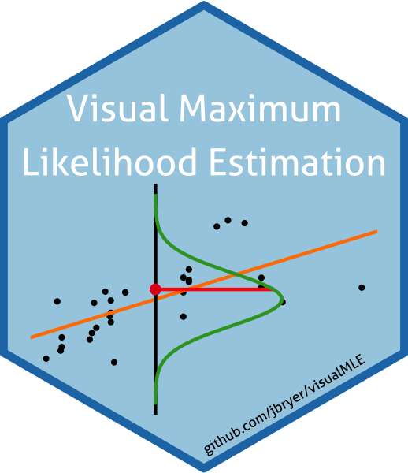
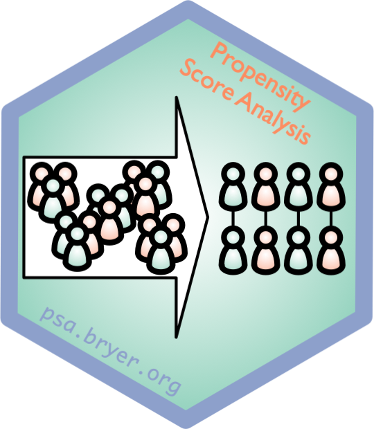

Projects
An R package to interface with the Brickset.com API for getting data about LEGO sets
Visual Introduction to Maximum Likelihood Estimation
 The Diagnostic Assessment and Achievement of College Skills is a diagnostic assessment designed to help students transition to college. DAACS provides personalized feedback about students’ strengths and weaknesses in terms of key academic and self-regulated learning skills, linking them to the resources to help them be successful students.
The Diagnostic Assessment and Achievement of College Skills is a diagnostic assessment designed to help students transition to college. DAACS provides personalized feedback about students’ strengths and weaknesses in terms of key academic and self-regulated learning skills, linking them to the resources to help them be successful students.
This project supports the implementaion of Positive Behavioral Interventions & Supports (PBIS) in New York State. PBIS is a systems approach to creating and maintaining positive school climates where teachers can teach and students can learn. This evidence-based framework emphasizes preventing school discipline problems.
 An R package designed to help analyzing and visualizing Likert type items.
An R package designed to help analyzing and visualizing Likert type items.
Propensity Score Analysis (PSA) is a statistical approach for estimating causal effects from observational studies. This project includes materials from workshops taught, an Shiny application for conducting PSA, and an early draft of a PSA book.
Propensity Score Analysis (PSA) is a statistical approach for estimating causal effects from observational studies. This project includes materials from workshops taught, an Shiny application for conducting PSA, and an early draft of a PSA book.
Editable DataTables for shiny apps.
 An R package to maintain data caches.
An R package to maintain data caches.
 An R Package to Support Propensity Score Analysis.
An R Package to Support Propensity Score Analysis.
 R Package and Shiny Application for the Analysis of Qualitative Data.
R Package and Shiny Application for the Analysis of Qualitative Data.
 Propensity score matching for non-binary treatments.
Propensity score matching for non-binary treatments.
An R package to interface with the Integraded Postsecondary Education Data System.
 Machine Learning Dashboard.
Machine Learning Dashboard.
An R package for estimating and visualizing multilevel propensity score models.
An R package to interface with the National Assessment of Educational Progress (NAEP) restricted use databases. This includes access any analyzing data using the replicate weights and multiple plausible values.
A data-only R package for the 2009 Programme of International Student Assessment (PISA) conducted by Organisation for Economic Co-operation and Development (OECD).
An R package to interface with the Qualtrics.com survey system.
An R package to get Rural-Urban Commuting Area (RUCA) Codes from zip codes.
The sqlutils package provides a set of utility functions to help manage a library of structured query language (SQL) files.
An R package to create timeline figures.